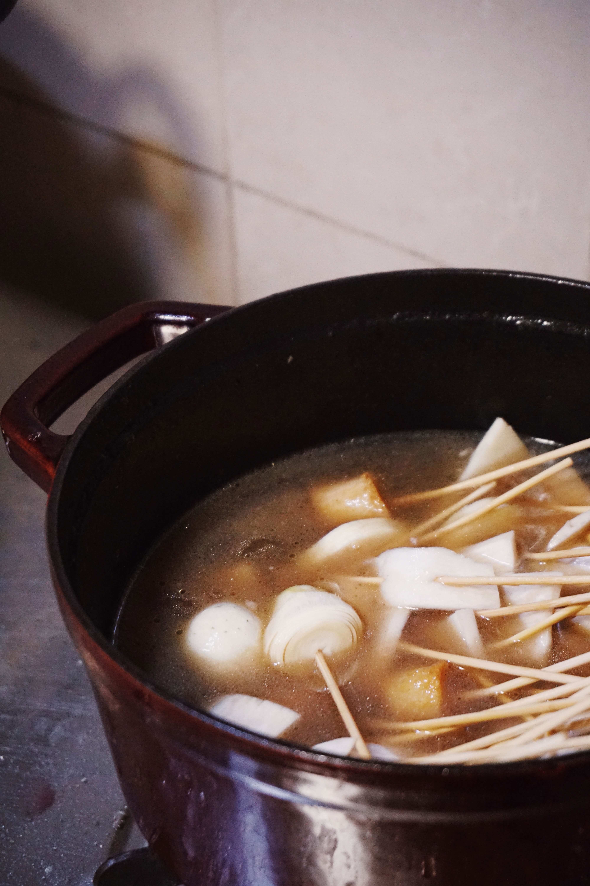
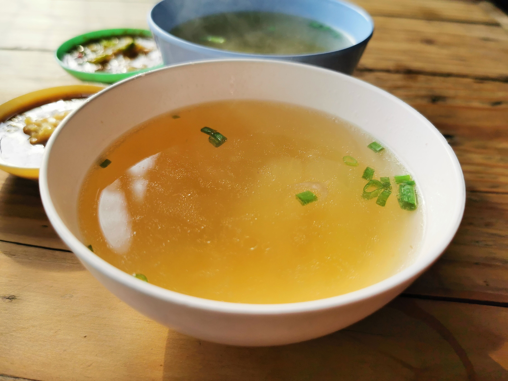
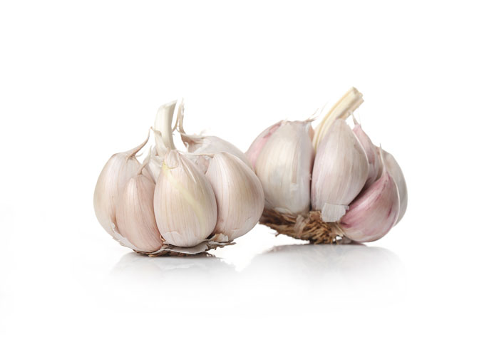
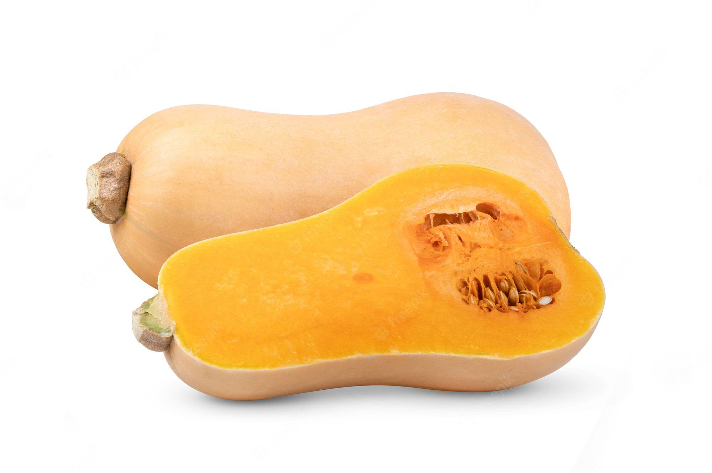
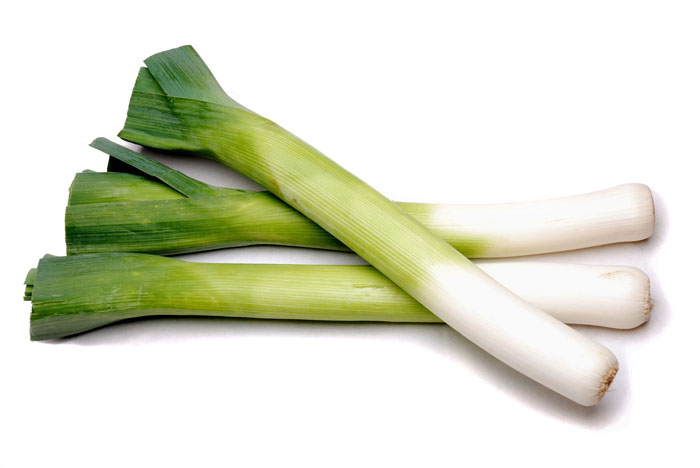

Bone broth is made from boiling animal bones, vegetables, and water together.
Our Broth History
Using bone broth in dishes and soups has been around for over 2,500 years, dating back to acient Chinese medicine practices.
Bone broth can be added to a huge varitey to soups meaning that there is something for everyone to love on our menu!
The way we create our homeade bone broth is by using the bones the meats featured in our soups!) simmering with a variety of vegetables and spices that give our broth a rich, warm flavor.
Just think about how warm soup from your childhoods household made you feel.


- The broth is full of vitamins and nutrients such as calcium, magnesium, phosphorus, Vitamin A, K2, iron, zinc and more!
- It helps protect your joints. Glucoasmien and chondroitin are naturally occuring amino acids that help reduce join pain
- It helps with digestion. The gelatin in bone broth helps to heal the gut lining and reduce inflammation.
Scroll to learn about our most popular ingredients of the season
Tomato
High in antioxidants to reduce risk of heart disease and cancer. They are also high in vitamin C & K, potassium, folate.
Garlic
Contains manganse, vitmains C & B6, selenium and fibers. It can also help boost your immune system!

Squash
High source of antioxidants including vitamins C and E. Antioxidants help reduce cell damage and inflamation.

Leek
Contains vitamins such as A and K, as well as folate, magnesium, iron, and calcium. This helps reduce complications of heart disease

Don't see an ingredient you have a question about? Send us a message!